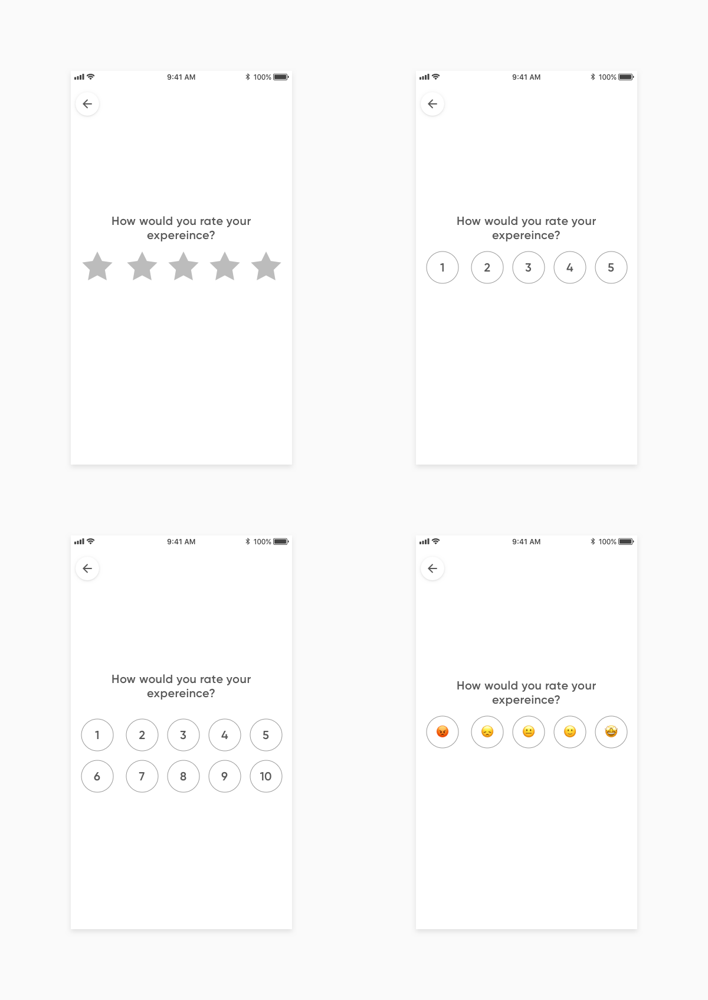

Bó — Customer satisfaction
A case study about measuring customer satisfaction and feedback
Background Information
WHAT IS BÓ?
Bó was an attempt by NatWest to create a fully digital bank in a start-up like environment. The idea was that customers would deposit their spending amount in Bó, as previous research has shown that by splitting up your spending money from everything else and then keep track of your spending, you’re likely to end up saving more. Within 5 months of launching we had managed to onboard around 12,000 customers. Unfortunately due to budget cuts caused by the coronavirus, in May 2020 the app had to wind down.
MY ROLE
I joined the team at Bó in October of 2019 as a product designer. To start with I floated between several cross-functional teams to oversee improvements in various parts of the app before its launch in late November 2019.
After the launch of the product I was then moved onto working in a cross-functional team focused on the sign-up and onboarding experiences, where I worked closely with data and user research techniques to evaluate, plan and design what we should do next. This included projects such as: refining and streamlining the current onboarding, looking at ways we can create product stickiness after a customer has signed up, account recovery flows, biometric login, reinforcing the use of Bó as an account for spending money and the process of closing an account.
Introduction
This case study looks at a small project I was involved in to help capture one of the top level business metrics for Bó and drastically improve the completion rate of this form from 10% to over 70%. I wanted to showcase this particular project as I feel it can show how design can have a massive impact on a business as well as my skills as a product designer.
The business problem
Support is an essential experience to nail in a digital only bank as customers would no longer have to go into branch to resolve issues. In Bó, users would get thrown straight into a chat with a real agent just by clicking on the support icon in the tab bar.
The problem here though was our customer support team had no way of tracking how their support was being perceived by our users, as the current method was only yielding a response rate of less than 10%. This was because it relied on the customers having to check their email and then be inclined to respond to it.
Pain points in the existing experience
My first action in this project was to set-up a meeting with our head of customer support and our product manager. In this meeting I sat down with them and stripped back the initial scope of the brief and find out what the key reasons for the current completion rate being so low were. This pointed to four problems in particular.
- Problem one: as already mentioned, the initial customer satisfaction (CSAT) survey was being sent to customers by email. This is naturally going to result in a low drop off because of the added friction.
- Problem two: if a customer opened up the survey they would see around 5 questions with large inputs for a customer to type an answer. This was therefore making the process look time consuming.
- Problem three: we were currently using a rating system of 1—10. This rating system was very ambiguous. For example everyone would have a different view of what the rating “7” meant.
- Problem four: the current method was a manual process for our customer support agents. Each time they had finished a chat with someone, they would have to generate a link to send someone, find the users email and then manually create an email to be sent to the user. This is obviously a timely consuming when support are having to deal with many messages.
Testing and iterations
After identifying the pain points the I wanted to tackle the ambigious rating system problem. Solving this would provide the support team with more accurate and understanable results.
To do this is I conducted different rating systems and tested them in-house to gauge peoples understanding of the new proposals. These were tested using a quickly done UI mock-up alongside the question “How would you rate someone if you felt like you had an average experience?”
Its important to remember that this mock-up was not to explore the interaction pattern but just how well understood different ratings scales were. Developing the interaction would come later.
From this set of testing it was clear that the obvious path to go down was the rating system using expressions. People seemed to engage and relate to these more than any of the other systems trialed, it also resulted in the most consistent answer.
With the rating system decided on, I had to now work out how I believed this should work as an interaction pattern. Here I trialed many scenarios including having: modals at the end of the chat, each support case belonging in it’s own chat thread and even having the CSAT score feel like it’s a continuation of the existing chat.
The shipped solution 🚀
Given the feedback received and playing around with the interaction on my device this solution (see below) felt the most natural. It was designed in a way which wouldn’t be too intrusive as if the customer decided to revisit the the chat as once the rating has been given, the modules will disappear. The other significant part of this design was that if a customer has decided to not answer survey response, it was still a natural experience to ping the user a notification and try and prompt them to respond. If a user still hasn’t responded within 24 hours then the CSAT feature would timeout.
Live version of the product
This solution was also designed with scalability in mind. The idea is that the core components of this feature could be tweaked ever so slightly so we could ask more questions in the future or even use these as building blocks to build more features into the support screen - such as links to articles.
As you can see in the shipped exploration, I also explored what we could do beyond a static facial expression. This was an attempt to further evolve our brand identity so we can begin using motion in more places throughout the app, as well as adding moments of delight for the user even if they’ve had a bad experience; thus highlighting the empathic side of the brand.
The animations for the different facial expressions
This solution also meant minimal changes would be needed throughout the whole support infrastructure (for our customer support facing tool and also our user facing product). As you can see below choosing to send a CSAT request is a simple Yes or no modal for our customer support agents once they close of an issue.
Live version of the product across both platforms
Results
As soon as this feature was shipped the results where immediate. Within just a week completion rates for customer feedback soared and eventually sustained a completion rate of around 70%. This did even better than we expected as we set the goal for success of this project to be 50%.
Another interesting and unexpected outcome was how the positive reactions started to become a symbol for success and positivity around the business. Developers where using the reaction to approve code changes and the reactions were commonly used in Slack to highlight good work!
Future iterations
Upon evaluating the success of creating a seamless in chat experience for capturing feedback on customer support, it became apparent to me that we could enhance the chat experience even further. This way it could be more beneficial for the business and design team as a whole.
Given more time to iterate on the designs based on these results we recorded, I would have liked to have built on top of the modular design framework I had created and created a stronger vision for what this could have evolved into in the future. For example, I would have liked to explore experiences which ask more specific questions about experiences in app and even use the chat function as a tool we could use to recruit a set of active users we could run user tests with as a design team. This could have been a valuable toolset for us to improve existing features in the app.
TL;DR
I helped design a customer support feedback mechanism which resulted in an improving the completion rate for measuring support satisfaction from 10% to over 70%.